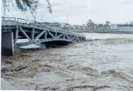

Cuando Piura quedó aislada
Durante el Fenómeno El Niño 1997–1998, las fuertes lluvias y el incremento del caudal del río Piura provocaron el colapso de importantes puentes de la ciudad, entre ellos el Puente Bolognesi y el Puente San Miguel. Este evento aisló gran parte de la ciudad y dejó a cientos de personas atrapadas en sus barrios.
“El río arrastró todo a su paso; ver cómo los puentes cedían ante la fuerza del agua fue aterrador para los vecinos.”
Impacto
- Cientos de personas quedaron aisladas en sectores como La Arena y Catacaos.
- Vehículos y casas cercanas a los puentes sufrieron daños graves.
- Se reportaron varios heridos y fallecidos a causa del colapso y las inundaciones.
- El transporte y la logística de la ciudad se paralizaron durante días.
Respuesta y reconstrucción
Las autoridades locales trabajaron para habilitar pasos temporales y traer ayuda humanitaria a los barrios aislados. Posteriormente, se reconstruyeron los puentes con mayores estándares de resistencia, aprendiendo de los errores de infraestructura que la tragedia había expuesto.
Lecciones aprendidas
1. La planificación urbana debe considerar la fuerza de fenómenos naturales extremos.
2. La infraestructura crítica requiere diseño antisísmico e hidráulico.
3. La coordinación entre autoridades y comunidad es clave para la evacuación y rescate.
4. Monitorear los ríos y sistemas de drenaje evita desastres similares en el futuro.
Fuentes: La República – “El Niño 1998: Puentes colapsan en Piura” • RPP – “Puentes Bolognesi y San Miguel se derrumban” • El Comercio – “Piura aislada tras desborde de río”.